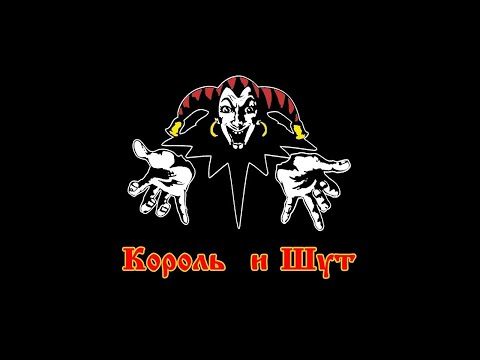

Главная | Общая информация | История | Фильмография | Источники

Король и Шут, часто сокращаемые до «КиШ», они же — лучшие сказители мрачных сказок России, способные перещеголять богатством фольклора даже Братьев Гримм (не путать с Братьями Грим, они появились чуть позже). Будучи представителями довольно нишевого и непопулярного жанра, они умудрились вытащить его на свет божий и стать по-настоящему народной группой. А вот как именно, сейчас и расскажем.